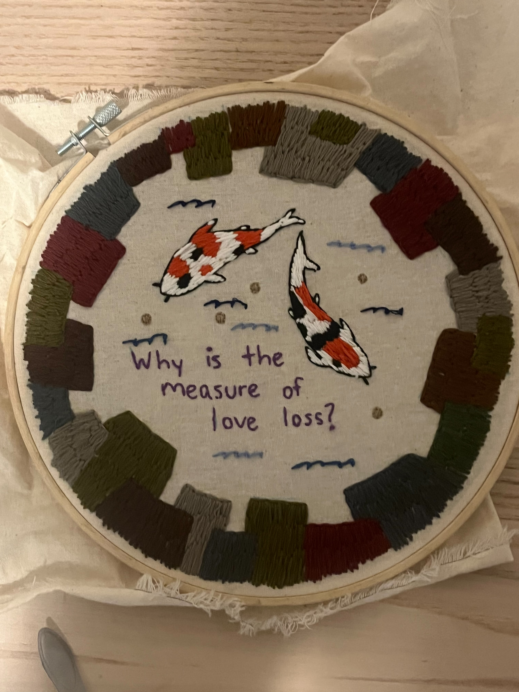

I love kiki like a lobster ,, very proud of this one
Embroidery that's more ~art~

another one for kiki my beautiful love. It's a daisy with french knots at the center and satin stitch for the pedals

Queer Joy is Sacred I Made this after recovering from top surgery and it is incredibly special to me

I made this for someone I loved ! and she loved to fart :) and that's beautiful. Keeping it on the page bc its cutie
Made this after a really sweet text from my grandma :) I Love my grandma. mostly just a back stitch and some french knots for practice. some flower stitches too

this one is a breakup endeavor and the quote is from Written on the Body by Jeanette Winterson. It's all backstitch and satin stitch (I think, tbh I'm not sure the rules about filling stuff in)
Embroidered Silliness

Daddy dearest is very supportive and I thought it would be a good gift to show him just how much I see him. He's lowkey a hater in a not problematic way so there's balance. Regular back stitching for all lettering.
some god is trans content looped together. The one that is pink-ish shirt is chain stich for the words 'God' and 'Trans'. The other ones are just regular backstich.


Made this bad boy for the Swarthmore Alpha. Like no one is Alpha like her. This is a quote verbatim from her. It's some life advice. The stiching is regular backstitch on the back and front. But the ALpha is a cross stitch pattern


YIKES!! imagine ... no bi hate in all seriousness. just a little jokey see how happy the bi bff is. like she's fine. So happy to be there. Regular backstitching for the lettering and then some flowers and then some hearts and stars. All for this star Madeline.


Alex here loves to Fart. I've never met a person who is more gaseous than Alex. Like??? Make it make sense! SO in honor of that, and for her silly little 21st birthday, I cross- stitched I FARTED on some boxers.

This one is another pro-lesbian statement. For a friend who only has white friends if they're lesbians.


for my favorite kiki who is DJ KHALED's NUMBER ONE FAN. @djkhaled notice her!!


Randy is wonderful and deserves a hat with her esteem and perfect personality. here is a hat for randy. mostly simple backstitch for everything but I did some cross stitch for the loon

another randy gift bc i also bought her a shirt and she needed a whole fit from trel. I painted the words on fabric. dyed the pockets green and purple and and then embroidered the fabric on with a running stitch.

for Nat!! what a wonderful human and Alaskan!! It's a chain stitch for all the lettering baby
This one is for julia!! A rip off of marcus pork but that's okay Its anxious jewish lesbian fall sem and lets overthink and yearn!!! Simple backstich for all